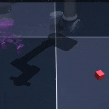

观测
机器人在时间 (t) 看到一张图片，记作 (o_t)。它不是环境完整状态，只是当前能看到的信息。
\(o_t = \text{当前图片}\)
FROM PIXELS TO PLANNING
先用 LeWM 认真预测眼前几步，再用 successor feature 估计更远的长期代价。这个页面不假设你有强化学习基础，所有符号都会先解释“为什么需要”，再解释“公式在做什么”。

先不要记公式
机器人要从当前画面走到目标画面。它可以在脑中试很多条短路线，但模型越往未来预测越容易偏离现实。
LS-LeWM 的折中：前面几步交给可以接受任意候选动作的 LeWM；后面不再逐步想象每个动作，而是交给一个学过离线轨迹的目标策略，并用 successor 把它的长期结果压缩成一个可比较的代价。
01 / PROBLEM SETUP
每一条公式都来自一个具体需要。先从机器人看到什么、能做什么、想去哪里开始。
机器人在时间 (t) 看到一张图片，记作 (o_t)。它不是环境完整状态，只是当前能看到的信息。
机器人选择动作 (a_t)，例如向左推、向右推或改变末端执行器的方向。
目标也可以由一张图片给出，记作 (o_g)。模型会把它变成目标 latent (z_g)。
像素太大、太细，而且无法直接告诉模型“什么变化对控制最重要”。
先用 encoder 把图片压缩成控制用的 latent 表示。
\(\phi\) 是 encoder。它的目标不是生成一个人能读懂的坐标系，而是学习一个对预测和控制有用的内部表示。
02 / LOCAL DYNAMICS
同一张图片下，物体可能正在向左运动，也可能正在向右运动。当前画面不一定包含足够的速度信息。
历史动作告诉模型“我是怎么来到现在的”。这就是为什么 LeWM 的输入不是一个 latent，而是一段 history。
当前配置 (m=3)，所以大致是最近三个 latent 加上最近两个历史动作。
模型需要知道当前动作会把系统推向哪里。
输入 history 和当前动作，预测下一步 latent。
这条公式让 CEM 可以问模型：“如果我现在执行这个动作，下一步大概会到哪里？”
03 / GOAL DISTANCE
当前方法使用 goal-reaching 代价：latent 离目标越近，代价越低。这里的“低”就是好。
一个小例子
如果 (z=[1,2])，目标 (z_g=[3,5])，并且 (D=2)：
如果机器人后来走到更接近目标的 latent，6.5 就会变小。
04 / CONTINUATION POLICY
如果让 LeWM 永远递归预测，误差会累积。于是方法另外学习一个“给定目标，下一步怎么走”的策略。
在离线轨迹中，未来状态可以事后充当目标。例如把 (z_2) 当作目标，就可以用真实动作 (a_0) 监督当前策略。
它学习的是“数据中通常如何朝未来目标走”，不是通过强化学习算出来的全局最优动作。
successor 需要知道长期应该按照什么行为继续。
一个可执行、尽量接近离线数据分布的 continuation policy。
05 / SUCCESSOR FEATURES
目标会变化。向量先总结“未来会访问什么”，目标权重再把它转换成“对这个目标有多远”。
保留三类信息：latent 本身、latent 的平方大小、以及常数项。
换一个目标，只需要换 (w(z_g))，不需要重新训练一个独立的 value 网络。
最后一步只是平方展开式：(lVert z-z_g Vert^2=lVert z Vert^2-2z_g^ op z+lVert z_g Vert^2)。所以这里不是经验近似，而是严格的代数恒等式。
06 / THE LONG-TERM OBJECT
把“未来很多步的目标距离”拆成“未来很多步的 feature 访问记录”。
07 / BELLMAN RECURSION
因为“未来总和”可以拆成“下一步 + 从下一步开始的剩余总和”。这就是 Bellman 递推。
第一项：马上到达的下一状态 (z_{t+1}) 带来即时 feature。
第二项：从下一状态开始，按目标策略继续走的剩余结果。
终止标记：如果 (d_{t+1}=1)，剩余项被乘成 0，不再 bootstrap。
如果 online 网络既负责预测 (G)，又负责生成训练目标，那么它会一边追逐自己一边改变目标，训练容易抖动。于是保存一个变化较慢的 EMA 副本：
当前配置 ( ho=0.995)。target 网络不通过这次 TD loss 反向传播，只负责提供相对稳定的参照。
08 / TRAINING OBJECTIVE
LS-LeWM 不是只训练一个 head，而是让局部 world model、successor 和 continuation policy 共同工作。
让 LeWM 的 (hat z_{t+1}) 接近真实 (z_{t+1})，保住短期动力学能力。
沿用 LeWM 的表示约束，减少 latent 表示退化或塌缩。
让 online successor 接近 Bellman 目标，学会累计未来 feature。
让 (pi_eta(h_t,z_g)) 学习离线轨迹里的真实动作。
在已经到达目标的上下文里，要求 successor 接近零。
为什么训练序列是 19？
序列 (z_0,ldots,z_{18}) 中，第一段完整 history 从 (z_2) 开始。于是最远目标是 (z_{18})，offset 是 (18-2=16)。
offset=1 的训练 pair 最多，offset 越远，能构造的 pair 越少。如果把所有 pair 混合平均，短距离目标会淹没长距离目标。uniform offset weighting 的做法是先分别平均每个 offset 的 loss，再平均这些 offset。
09 / MPC INFERENCE
CEM 不需要知道 successor 的内部实现，只需要给它候选动作序列的最终代价。
五步 prefix 之后的 tail 权重是 (gamma^5\approx0.774)。所以 tail 不是装饰，它承担了相当一部分长期判断。
10 / WHAT TO CHECK
数学告诉我们这个方法想表达什么；实验还要检查它是否在真实的模型误差、数据分布和终止语义下成立。
训练中到达目标后停止 bootstrap，规划中的 prefix 是否也在同一个时刻停止累计，需要保持一致。
successor 训练使用的历史长度和评估时 padding 出来的历史是否分布一致。
训练时大量使用真实 latent，推理 tail 接收 LeWM 预测 latent，二者的差异需要通过 smoke 和消融实验量化。
至少比较原始 LeWM、dense prefix、successor tail、policy warm start 和完整 LS-LeWM，才能知道提升来自哪里。
ONE SENTENCE TO KEEP
建议阅读顺序：先看“问题设定”，再看“目标距离”，然后逐行展开 successor 的代数恒等式，最后回到 MPC cost。这样每条公式都能找到它出现的前因和后果。